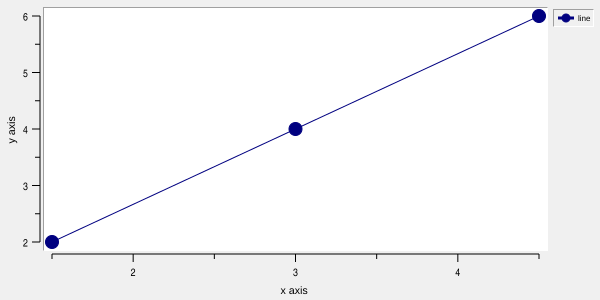
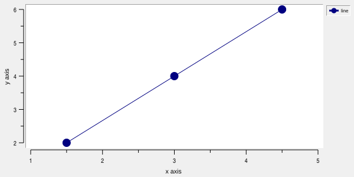
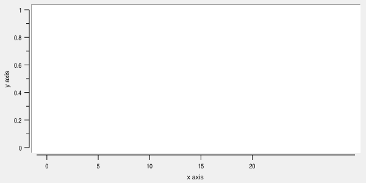
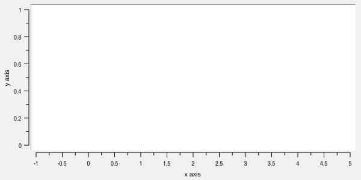
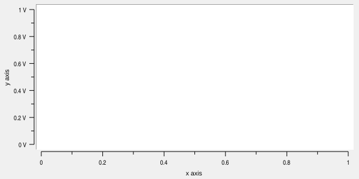
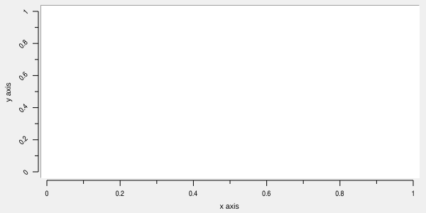
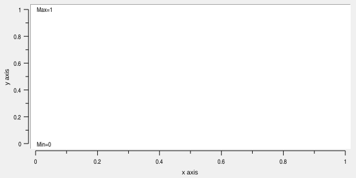

Graph virtual axis AXIS command
Commands in this namespace document operations accepted by the axis component of a graph, barchart,
stripchart, or polar widget.
AXIS is used below as a placeholder for:
GRAPHINST axis
Trackgraphs also provide track yview for local data scrolling and track view for independently scrolling the list of tracks.
For example:
graph .g
.g axis create temperature -title "Temperature"
.g axis configure temperature -min 0 -max 100
Axis lines and tick marks follow the graph’s -renderer and -antialias settings. Cairo preserves their
mapped geometry, color, width, and projecting caps, including axes in margins. A zero -linewidth hides
strokes. Tick labels, titles, and relief backgrounds remain native.
Virtual axes
Every graph widget initially contains four axes named x, y, x2, and y2. The x and y axes are the
primary axes and are displayed by default. The secondary x2 and y2 axes are created on the opposite margins
and are hidden by default.
Additional axes may be created with AXIS create:
.g axis create current -title "Current"
A newly created virtual axis does not have to be displayed. It may be used only for mapping elements, or it may
later be assigned to one of the graph margins with the appropriate margin-axis use operation.
An axis becomes an X or Y axis according to how it is first used. Once its type has been established, the same axis cannot subsequently be used as the opposite type.
More than one axis may be displayed in the same margin.
Axis ranges
By default an axis is automatically scaled from the data of the elements mapped to it. The -min and -max
options override the automatically calculated lower and upper limits independently.
For example:
.g axis configure y -min 0 -max 10
Setting either option to an empty value restores automatic calculation of that limit.
The -loose option determines whether automatically calculated limits stop at the data boundary or extend
outward to convenient major tick positions.
It accepts one or two values. If one value is supplied it applies to both limits. With two values, the first controls the minimum and the second controls the maximum.
Each value may be a Tcl boolean or the literal always:
Value |
Description |
|---|---|
|
Keep the corresponding axis limit tight to the data or explicitly requested limit. |
|
Extend an automatically calculated limit to the next outer major tick, but keep an explicitly supplied |
|
Extend the limit to an outer major tick even when the corresponding |
For example:
.g axis configure y -loose yes
.g axis configure y -loose {no yes}
.g axis configure y -loose always
AXIS limits returns the effective limits currently used to display an axis, after automatic scaling,
requested limits, logarithmic conversion, and loose-range processing have been applied.
To demonstrate -loose option effect, let’s add element with lower and upper x values equal to fractional
numbers:
.g element create line -data {1.5 2 3 4 4.5 6}
with -loose no the x axis limits are set to the lower/upper limits of the element:

with -loose yes the x axis limits are rounded to the closest major ticks:

Automatic sliding ranges
The -autorange option provides a sliding axis window useful for continuously growing data.
A positive value specifies the width of the displayed window in graph-coordinate units:
.g axis configure x -autorange 10
When new data move beyond the current upper limit, the window is shifted so that the latest values remain
visible. Automatic sliding is active only while both -min and -max remain automatic.
-shiftby can make the sliding window advance in discrete increments. A positive value rounds the advancing
upper limit upward to the next multiple of the requested interval.
.g axis configure x -autorange 10 -shiftby 1
A non-positive -autorange value disables the sliding window.
Logarithmic axes
Setting -logscale to true selects base-10 logarithmic mapping:
.g axis configure y -logscale yes
Logarithmic axes have a strictly positive data domain. Values mapped through a logarithmic axis must be
greater than zero. Explicit -min, -max, -scrollmin, and -scrollmax values must likewise be positive.
AXIS transform accepts ordinary positive data values and AXIS limits returns ordinary data values; callers
do not need to apply log10 themselves.
Automatically generated major ticks normally correspond to powers of ten. For a normal logarithmic range, minor ticks represent the values 2 through 9 within each decade.
Example of logarithmic y axis:
.g axis configure y -logscale yes -min 1e-1 -max 1e3
Explicit -majorticks on a logarithmic axis are specified in base-10 exponent coordinates. For example:
.g axis configure y -logscale yes -majorticks {0 1 2 3}
places major ticks at 1, 10, 100, and 1000.
Major and minor ticks
When -majorticks is empty, RBC automatically chooses major tick positions.
A custom list may be supplied:
.g axis configure x -majorticks {0 5 10 15 20} -min -1 -max 30

Each list element is evaluated as a Tcl numeric expression and must produce a finite value.
When major ticks are generated automatically, -stepsize may request the interval between major ticks on a
linear axis:
.g axis configure x -stepsize 0.5 -min -1 -max 5

A value less than or equal to zero selects automatic step calculation. If a requested step would produce an impractical number of ticks, RBC falls back to an automatically selected interval.
The -subdivisions option controls automatically generated minor ticks between major ticks. A value of N
divides each major interval into N parts, producing N-1 minor ticks. The default value is 2, which
produces one minor tick halfway between adjacent major ticks.
Explicitly configuring -majorticks disables automatic minor ticks on both linear and logarithmic axes.
Minor ticks may still be supplied explicitly with -minorticks. Clearing -minorticks leaves minor ticks
disabled while explicit major ticks remain; clearing -majorticks restores automatic generation.
Values in -minorticks are fractional offsets within a major interval. For example:
.g axis configure x -minorticks {0.25 0.5 0.75}
places three minor ticks within each major interval.
With explicit -majorticks, each minor fraction subdivides the interval from one supplied major tick to the
next, in list order. No minor ticks are drawn after the last major tick or for a zero-length interval. Only
fractions strictly between 0 and 1 are drawn in these intervals. For example, major ticks {0 2 5} and minor
ticks {0.5} place minor ticks at 1 and 3.5 on a linear axis.
On logarithmic axes, interpolation takes place in base-10 exponent coordinates. With consecutive integer major exponents, use minor fractions log10(2), log10(3), through log10(9) for the usual decade subdivisions. For wider explicit intervals, these fractions scale with the full exponent interval. Automatically generated major ticks retain their regular subdivision and clipping rules at the axis limits.
An empty -majorticks or -minorticks value restores automatic generation for that tick class.
Tick labels
Major tick labels are generated automatically. Linear-axis labels use a general floating-point representation, while logarithmic major labels use power-of-ten notation.
-command may be used to replace the generated label text. Its value is a Tcl command prefix. For every
major tick, RBC appends two arguments:
graphPath defaultLabel
The result returned by the command becomes the displayed label.
For example:
proc formatTick {graph label} {
return "$label V"
}
.g axis configure y -command formatTick

If the formatting command raises an error during drawing, the error is reported as a background error and the original default label is used.
-labeloffset moves each tick label to the middle of the following major interval while leaving the major
tick mark itself at the original position. This is useful for category-like axes.
Tick labels may be rotated with -rotate:
.g axis configure x -rotate 45

Angles are specified in degrees and are normalized into the range from 0 through less than 360 degrees.
Axis limits display
-limitsformat optionally displays the minimum and maximum axis limits around the plotting area.
The value is a Tcl list containing one or two printf-style floating-point formats. With one format, the same format is used for both limits. With two formats, the first formats the minimum and the second formats the maximum.
.g axis configure y -limitsformat {%.3g}
.g axis configure y -limitsformat {Min=%.3g Max=%.3g}

An empty format element suppresses that particular limit:
.g axis configure y -limitsformat {{} {%.3g}}
suppresses the minimum while displaying the maximum.
Limit formats are validated before being accepted. A format may contain at most one floating-point
conversion and may use the standard a, A, e, E, f, F, g, or G conversions. Dynamic width and
precision using * are not permitted.
-limitscolor, -limitsfont, and -limitsshadow control the appearance of the displayed limits.
Axis scrolling
An axis can expose a scrollable world range through the view operation.
The scrolling region normally comes from the complete data range mapped to the axis. -scrollmin and
-scrollmax may override its lower and upper boundaries.
Querying the view:
.g axis view x
returns two normalized fractions:
first last
describing the visible portion of the scroll region. The values use the same left-to-right or top-to-bottom convention as a Tk scrollbar, including for descending axes.
The view can be moved using standard Tk scrolling forms:
.g axis view x moveto 0.25
.g axis view x scroll 1 units
.g axis view x scroll -1 pages
A page is 90 percent of the currently visible range.
-scrollincrement specifies the screen distance represented by one units movement. It must be a positive
screen distance.
For compatibility, a single integer argument is also accepted and is treated as a unit scroll:
.g axis view x 1
-scrollcommand specifies a Tcl command prefix to notify when the axis viewport is redrawn. RBC appends the
normalized first and last fractions to the command prefix, making it suitable for a Tk scrollbar’s set
command.
For example:
scrollbar .xs -orient horizontal -command [list .g axis view x]
.g axis configure x -scrollcommand [list .xs set]
Axis bindings
Axes participate in the graph binding system. AXIS bind creates bindings for axis names, axis classes, or
user-defined binding tags.
The axis name and its X/Y class are always included in the binding-tag sequence. Additional tags may be
supplied with -bindtags. The default additional tag is all.
For example:
.g axis bind x <ButtonPress-1> {
puts "x axis selected"
}
AXIS get current returns the name of the axis currently selected by the binding machinery.
AXIS get detail identifies which part of the current axis was selected and returns one of:
label- a major tick label;title- the axis title;line- the axis line region.
If there is no current axis, these operations return an empty result.
Callback safety
Axis -scrollcommand notifications run at idle, outside graph drawing. Multiple redraws before a
notification runs coalesce to the latest fractions. Deleting an axis or its graph cancels pending
notifications. A callback may reconfigure or destroy its owner. Snapshot commands do not invoke the
callback synchronously; process idle events to deliver any resulting notification.
Axis -command label formatters run synchronously because layout needs their returned text. They should
normally only format the supplied value. If a formatter destroys the graph or changes its geometry,
RBC cancels the current layout or rendering operation. Synchronous callers such as svg output receive
an error with error code RBC GRAPH CALLBACK; idle drawing abandons that frame. A later operation can
use the updated configuration. Recursive rendering of the same graph from a formatter is rejected before
changing its export settings. Defer intentional repeated changes with an event-driven application design
rather than reconfiguring the graph every time a label is formatted.
Callback errors are reported through Tcl’s background-error mechanism. Label formatting errors use the ordinary numeric label as a fallback. Callback evaluation preserves the surrounding interpreter state.
Axis options
The following options apply to virtual axes and to axes displayed through the margin-axis commands.
Option |
Database name |
Database class |
Description |
|---|---|---|---|
|
|
|
Specifies the size of a sliding automatic axis range. A positive value enables the sliding window when neither |
|
|
|
Specifies the background color of the axis. An empty value makes the axis background transparent. |
|
— |
— |
Synonym for |
|
|
|
Specifies additional binding tags associated with the axis. The default is |
|
— |
— |
Synonym for |
|
|
|
Specifies the width of the border drawn around the axis. The default is |
|
|
|
Specifies the color used to draw the axis line and tick labels. The default is |
|
|
|
Specifies a Tcl command prefix used to format major tick labels. The graph pathname and the default tick-label string are appended as arguments. The command result replaces the default label. An empty value uses RBC’s built-in formatting. |
|
|
|
Specifies whether axis values increase in the reverse direction. The default is |
|
|
|
Specifies whether the axis is hidden. Newly created axes are normally visible. Of the four built-in axes, |
|
|
|
Specifies the justification of the axis title. The default is |
|
|
|
Specifies whether major tick labels are positioned halfway into the following major tick interval. The tick marks remain at their normal positions and the label text still represents the original major tick value. The default is |
|
|
|
Specifies the color used to draw axis limit labels. The default is |
|
|
|
Specifies the font used to draw axis limit labels. |
|
|
|
Specifies printf-style formats for displaying the axis minimum and maximum in the plotting area. The value is a list containing at most two formats. One format is used for both limits; with two formats, the first formats the minimum and the second the maximum. An empty value disables limit labels. |
|
|
|
Specifies a shadow for the axis limit labels. An empty value disables the shadow. |
|
|
|
Specifies the width of the axis line. The default is |
|
|
|
Specifies whether the axis uses logarithmic scaling. The default is |
|
|
|
Controls whether axis limits are extended to outer major tick boundaries. |
|
|
|
Specifies explicit major tick positions. Each list element is evaluated as a Tcl numeric expression. An empty value restores automatic major ticks. Supplying explicit major ticks disables automatic generation of minor ticks; explicit |
|
|
|
Specifies the requested maximum value of the axis. An empty value selects an automatically determined maximum. Accepts a Tcl numeric expression with a finite result. |
|
|
|
Specifies the requested minimum value of the axis. An empty value selects an automatically determined minimum. Accepts a Tcl numeric expression with a finite result. |
|
|
|
Specifies explicit minor tick positions within each major tick interval. Each list element is evaluated as a Tcl numeric expression. An empty value restores automatic minor ticks. Expression results must be finite. |
|
|
|
Specifies the relief of the axis background and border. The default is |
|
|
|
Specifies the rotation angle of tick labels in degrees. The default is |
|
|
|
Specifies a Tcl command prefix invoked when the axis view changes. An empty value disables the scroll callback. |
|
|
|
Specifies the positive screen distance used for unit scrolling. The default is |
|
|
|
Specifies the maximum value of the axis scrolling region. An empty value leaves the scrolling maximum unrestricted. Accepts a Tcl numeric expression with a finite result. |
|
|
|
Specifies the minimum value of the axis scrolling region. An empty value leaves the scrolling minimum unrestricted. Accepts a Tcl numeric expression with a finite result. |
|
|
|
Specifies the increment used when advancing an autoranging axis. When positive, the upper end of the sliding range is advanced to the next multiple of |
|
|
|
Specifies whether axis tick marks and labels are displayed. The default is |
|
|
|
Requests the major tick interval. A positive value is used as the starting interval and may be repeatedly halved if it is too large for the current axis range. A non-positive value selects automatic major tick spacing. The default is |
|
|
|
Specifies the requested number of subdivisions between major ticks when minor ticks are generated automatically. The default is |
|
|
|
Specifies the font used to draw tick labels. |
|
|
|
Specifies the length of major tick marks. Negative values reverse the direction of the ticks. The default is |
|
|
|
Specifies a shadow for tick labels. An empty value disables the shadow. |
|
|
|
Specifies the axis title. An empty value disables the title. |
|
|
|
Specifies whether the axis title uses its alternate placement. The default is |
|
|
|
Specifies the color used to draw the axis title. The default is |
|
|
|
Specifies the font used to draw the axis title. |
|
|
|
Specifies a shadow for the axis title. An empty value disables the shadow. |
Copyright (c) George Yashin